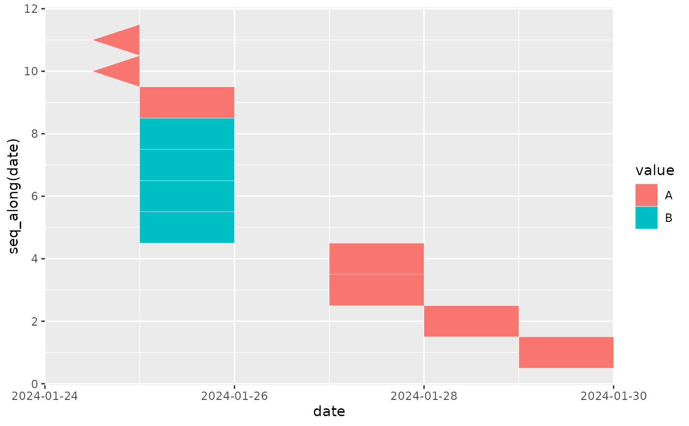

This geom behaves mostly the same as ggplot2::geom_rect() with a few
additions. Firstly, the label aesthetic is supported to draw text on top of
the tiles. Secondly, out of bounds values can be drawn as arrows at the edge
of the scale (see details below).
Usage
geom_calendar(
mapping = NULL,
data = NULL,
stat = "bin_location",
position = "identity",
...,
linejoin = "mitre",
label_params = list(colour = "grey30"),
na.rm = FALSE,
show.legend = NA,
inherit.aes = TRUE
)Arguments
- mapping, data, stat, position, linejoin, na.rm, show.legend, inherit.aes, ...
see
ggplot2::geom_tile().- label_params
additional parameters for text labels if present (see
ggplot2::geom_text()).
Details
Any x values that are infinite (i.e. -Inf or Inf) would normally be
dropped by ggplot's layers. If any such values survive the stat processing,
they will be drawn by geom_calendar() as triangles at the respective edges
of the scale.
The triangles are drawn with their base (vertical edge) sitting on the scale
limit, and their width is determined based on the tile size..
If you want to use this feature, you need to use the correct oob setting on
the date scale as well as a compatible stat, e.g. stat = "bin_location with
scales::oob_keep().
Note that the label aesthetic will be dropped if the data are not grouped
in the expected way. In general this means that all rows contributing to a
given bin must have the same value for the label aesthetic.
Examples
library(ggplot2)
set.seed(1)
events <- rep(as.Date("2024-01-31") - 0:10, rpois(11, 1))
values <- sample(c("A", "B"), length(events), replace = TRUE)
df <- data.frame(date = events, value = values)
ggplot(df) +
geom_calendar(
aes(date, seq_along(date), fill = value),
colour = "white",
breaks = list(x = "all", y = NULL),
overflow = TRUE,
binwidth = list(x = NULL, y = 1)
) +
scale_x_date(
breaks = "2 days",
limits = as.Date(c("2024-01-25", "2024-01-29")),
oob = scales::oob_keep,
expand = expansion(add = 1)
) +
scale_y_continuous(breaks = scales::breaks_width(2))
